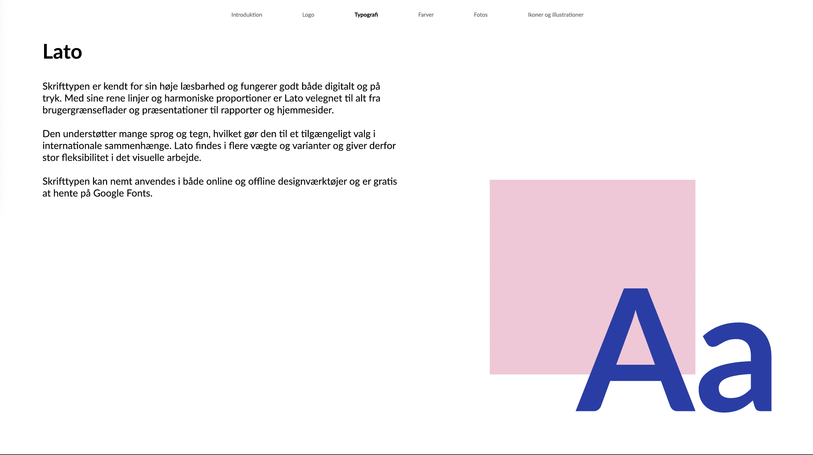
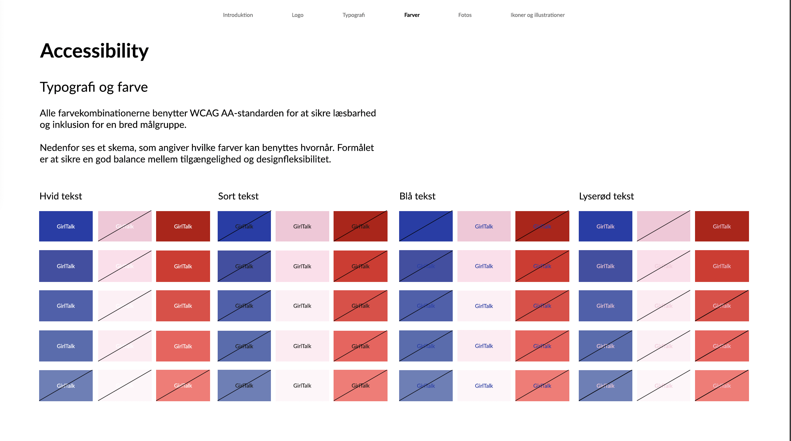

GirlTalk Visuel Identitet
Reducing patient transfers through real-time immersive collaborationt
2024
This project explores how a discreet wearable can support people in moments of anxiety and stress. Activated with a simple press, the device provides a gentle warmth that helps calm the body and shift focus during overwhelming situations. Each activation is automatically recorded in a connected app, giving users insight into patterns, triggers, and emotional progress over time.
By combining physical comfort with digital reflection, the concept aims to empower users to better understand and manage their emotional wellbeing in everyday life.


